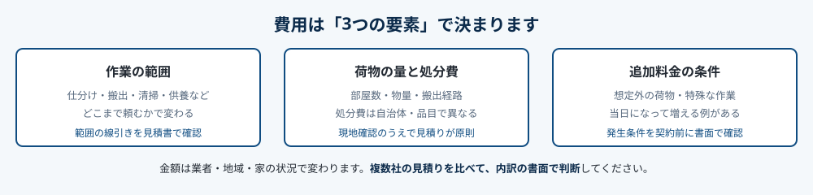

遺品整理を業者に頼む場面は、「荷物が多くて家族だけでは終わらない」「遠方で通えない」「賃貸の退去期限など、期限がある」といった場合です。ただ、費用の出され方には決まった型がなく、同じ家でも業者によって見積りが変わります。この記事では、金額そのものを断定するのではなく、費用が何で決まるのかと、選ぶときに確認すべき点を整理します。特定の業者の推奨はしていません。
費用が決まる3つの要素

1. 作業の範囲
仕分け、搬出、簡易清掃、供養の手配、買取査定など、どこまでを頼むかで変わります。「部屋の中を空にする」だけなのか、形見分けの立ち会いや貴重品の探索まで含むのか、範囲の線引きを見積書で確認します。
2. 荷物の量と処分費
部屋数や物量、搬出経路（階段・駐車スペースの有無など）で作業人数と時間が変わります。処分費は、自治体の処理施設や品目によって単価が異なります。家電リサイクル法の対象品目は処分方法が決まっているため、その分の扱いも見積りに含まれているかを見ます。
3. 追加料金の条件
当日に想定外の荷物が出てきた場合、特殊な清掃が必要な場合などに、追加料金が発生する条件が契約書に書かれていることがあります。「何が起きたらいくら増えるのか」を事前に聞いておくことが、後の行き違いを防ぎます。
つまり費用感をつかむ方法は、相場の数字を覚えることではなく、複数社に同じ範囲で現地見積りを頼み、内訳を並べて比べることです。見積りの前提（範囲・物量）がそろっていないと比較にならないため、頼む範囲は先に決めておきます。
選ぶときの確認点（8つ）
見積り・契約前に確認する8項目
- 現地確認のうえで見積りが出るか、見積書に作業範囲と金額の内訳が書かれているか
- 追加料金が発生する条件が、契約前に書面で説明されるか
- 一般廃棄物の収集運搬について、自治体の許可を持つか、許可業者と提携しているか
- 貴重品・形見が見つかったときの扱い（探索の範囲、返却・報告の手順）が決まっているか
- 買取できるものがある場合、査定方法と買取額の内訳が書面で出るか
- 作業範囲の線引き（仕分け・搬出・清掃・供養など、含むもの／含まないもの）が明確か
- 契約書があり、キャンセル条件とキャンセル料の扱いが書かれているか
- 作業中の物損などに備える損害賠償保険に加入しているか
特に3つ目の「許可」は見落としやすい点です。家庭から出る廃棄物の収集運搬は、市区町村の許可を受けた事業者が行う決まりです。許可のない事業者に渡した廃棄物が不法投棄されると、依頼した側が責任を問われる場合があります。許可番号や提携先を確認してから契約してください。
頼む範囲を決める考え方
すべてを業者に任せる必要はありません。たとえば「貴重品の探索と形見分けは家族で済ませ、大きな家具の搬出と処分だけを頼む」という部分的な頼み方もできます。家族でやる部分と業者に頼む部分を分けておくと、費用の内訳も読みやすくなります。全体の進め方は実家じまいの進め方の記事を参照してください。
よくある質問
- 見積りだけでも依頼できますか
- 多くの業者は現地確認のうえで見積りを出す形ですが、見積りが無料かどうか、見積り後に契約しなくてもよいかどうかは業者によって異なります。申し込む前に、その条件を電話や公式サイトで確認してください。複数社で見積りを比べることが、費用感をつかむ一番の近道です。
- 作業当日に立ち会いは必要ですか
- 業者や作業内容によって異なります。貴重品や形見の確認が絡むため、少なくとも開始時と終了時の確認は立ち会う前提で話を進めるのが安全です。遠方で立ち会えない場合は、写真報告の有無や、貴重品が見つかったときの扱いを契約前に決めておいてください。
- 買取してもらえるものはありますか
- 家電、家具、着物、貴金属などは買取の対象になることがありますが、可否と金額は査定を受けてみないと分かりません。買取額を作業費から差し引く形の見積りでは、買取の内訳も書面で出してもらうと、後から確認ができます。
- トラブルを避けるために一番大事なことは何ですか
- 「口頭で決めない」ことです。作業範囲、金額、追加料金が発生する条件、キャンセル条件は、すべて書面（見積書・契約書）で残してください。あわせて、廃棄物の収集運搬の許可を持つ事業者かどうか、または許可業者と提携しているかを確認すると、不法投棄などのトラブルを避けやすくなります。